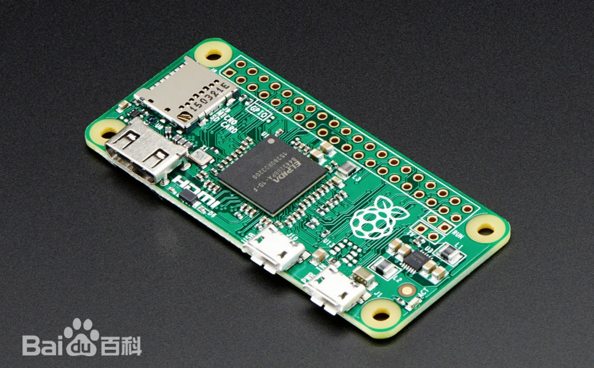
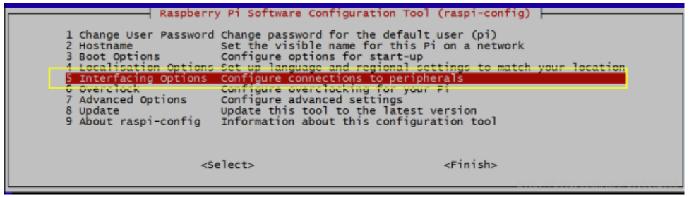
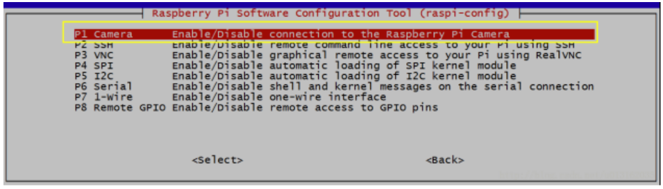
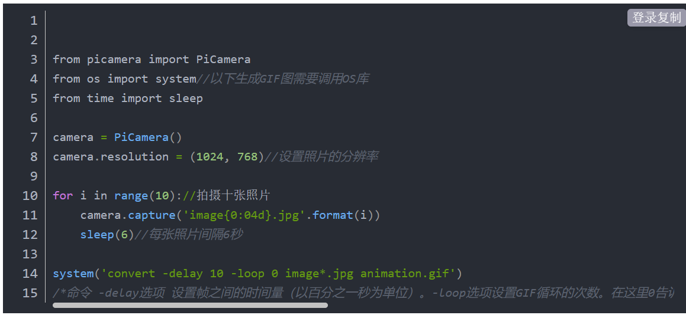
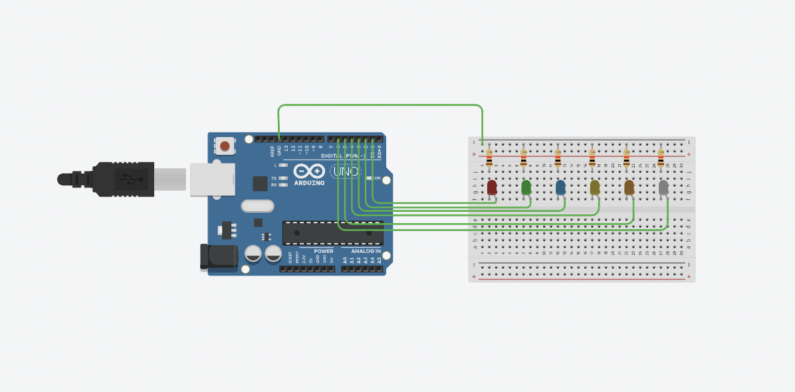

ABOUT

NO.1 Raspberry Pi
A microcomputer developed by the Raspberry Pi Foundation
Raspberry Pi is a microcomputer designed for learning computer programming
education, only the size of a credit card, and its system is based on Linux. With
the release of Windows 10 IoT, users can use Raspberry Pi running Windows.
Since its inception, Raspberry Pi has been highly sought after by computer
enthusiasts and makers, making it difficult to find a Pi. Although it may seem
petite on the outside, its internal "core" is very powerful, with functions such as
video and audio all available. It can be said that although it is small, it has all five
internal organs
A Case Study of Raspberry Pi

①安装软件开启摄像头
输入"sudo apt-gry update"的指令更新升级应用程序
输入"sudo raspi-config"指令开启摄像头
修改权限


输入"sudo reboot"指令并重启
输入"sudo apt-get install imagegickimagemagick"指令安装ImageMagick
②源码如下

保存退出输入"sudo python3 gif.py"的指令运行程序
https://blog.csdn.net/luminhua6/article/details/117856835
Arduino Control
1.Arduino IDE
The Arduino IDE, or Arduino Software, is a comprehensive software application used for coding, uploading, and
communicating with Arduino microcontroller boards. It offers a range of features, including a text editor for writing
code, a message area for feedback, a text console for displaying output, a toolbar with common functions, and various
menus. Here's a breakdown of its main components and functionality:
Text Editor for Writing Sketches:
Arduino sketches, or programs, are written in the IDE's text editor and are saved with the ".ino" file extension. The
editor includes features for cutting, pasting, searching, and replacing text.
Message Area: The message area provides feedback during actions like saving and exporting code, as well as displaying any errors that occur.
Console: The console displays text output generated by the Arduino IDE, which includes error messages and other information.
Toolbar: The toolbar consists of buttons for common functions. Functions include verifying code for errors and uploading programs to Arduino boards.
The "Upload" function compiles code and sends it to the selected Arduino board.
Menu Options: Various menus are available, including File, Edit, Sketch, Tools, and Help. These menus are context-sensitive, meaning they show only
the options relevant to the current task. Menu Functions:
File: Contains actions related to opening, saving, and managing sketch files.
Edit: Provides text editing tools and functions.
Sketch: Offers options for creating, opening, and saving sketches.
Tools: Includes functions like configuring the board and managing libraries.
Help: Provides assistance and documentation resources. Additional Functions:
"Serial Monitor" opens the serial monitor, which allows you to interact with your Arduino board via the serial port.
Holding the "Shift" key while clicking "Upload" is useful if you're using an external programmer with your board.
File
New: Creates a new blank editor window with the basic structure of a sketch already set up.
Open: Allows you to load a sketch file by browsing your computer's drives and folders.
Open Recent: Provides a short list of the most recently opened sketches for easy access.
ketchbook: Displays the sketches within the sketchbook folder structure, and clicking on a sketch opens it in a new editor window.
Examples: Lists all the examples provided by the Arduino Software, organized by topic or library, making them easily accessible.
Close: Closes the current instance of the Arduino Software (IDE) that you're working in.
Save: Saves the current sketch with its existing name. If the file hasn't been named previously, you'll be prompted to
provide a name in a "Save as..." window. Save as...: Lets you save the current sketch with a different name or in a different location.
Page Setup: Opens the Page Setup window for configuring print settings.
Print: Sends the current sketch to the printer based on the settings defined in Page Setup.
Preferences: Opens the Preferences window where you can customize certain settings of the IDE, including the
language of the IDE interface.
Quit: Closes all open IDE windows. Any sketches that were open when you chose to quit will be automatically
reopened the next time you start the IDE.
Edit
Undo/Redo: Allows you to step back or forward through your recent editing actions.
Cut: Removes the selected text from the editor and stores it in the clipboard for later use.
Copy: Duplicates the selected text and places it in the clipboard.
Copy for Forum: Copies your sketch's code to the clipboard in a format suitable for posting in a forum, complete
with syntax coloring.
Copy as HTML: Copies your sketch's code to the clipboard in HTML format, making it suitable for embedding in
web pages
Paste: Inserts the contents of the clipboard at the current cursor position in the editor.
Select All: Highlights and select the entire content of the editor.
Comment/Uncomment: Adds or removes the "//" comment marker at the start of each selected line, making it easy
to comment or uncomment code.
Increase/Decrease Indent: Adds or removes a space at the beginning of each selected line, adjusting the text's
indentation.
Find: Opens the Find and Replace window, enabling you to search for specific text within your current sketch with
various search options.
Find Next: Highlights the next occurrence of the specified search string in the Find window, relative to the cursor's
position.
Find Previous: Highlights the previous occurrence of the specified search string in the Find window, relative to the
cursor's position.
Verify/Compile: Checks your sketch for errors by compiling it and provides information on memory usage for code
and variables in the console area.
Upload: Compile your sketch and upload the resulting binary file to the configured Arduino board through the
specified port.
Upload Using Programmer: This option overwrites the bootloader on the board. To restore it and enable USB serial
port uploads, you'll need to use "Tools > Burn Bootloader." However, this allows you to utilize the full capacity of
the Flash memory for your sketch. Note that this command does not change the fuse settings, which can be
adjusted via "Tools > Burn Bootloader."
Export Compiled Binary: Saves a .hex file, which can be archived or uploaded to the board using other tools.
Show Sketch Folder: Opens the folder where your current sketch is located.
Include Library: Allows you to add a library to your sketch by inserting #include statements at the beginning of your
code. You can also access the Library Manager from this menu to import new libraries from .zip files.
Add File...: This option lets you include additional files in your sketch. These files are copied from their current
location and stored in the data subfolder of the sketch. This subfolder is intended for assets like documentation and
is not compiled as part of the sketch program.
Tools
Auto Format: This feature automatically formats your code, ensuring that curly braces line up correctly and
statements within braces are indented properly for improved code readability.
Archive Sketch: Creates a backup copy of the current sketch in .zip format, storing it in the same directory as the original sketch.
Fix Encoding & Reload: Resolves potential character encoding discrepancies between the editor and the operating
system, ensuring consistent character mapping.
Serial Monitor: Opens the serial monitor window, allowing data exchange with any connected board on the selected
Port. This operation often triggers a reset on the board (if supported) when the serial port is opened.
Board: Select the specific board you're using from a list. This choice is crucial for configuring the IDE to work
with the correct board.
Port: Lists all the available serial devices (real or virtual) on your computer. The list automatically refreshes
each time you open the top-level tools menu.
Programmer: This option is for selecting a hardware programmer when programming a board or
microcontroller that isn't using the onboard USB-serial connection. Typically, this isn't needed for regular use
but may be used when burning a bootloader to a new microcontroller.
Burn Bootloader: This menu allows you to burn a bootloader onto the microcontroller of an Arduino board. It's
not necessary for the standard operation of an Arduino board but can be useful if you're working with a new
ATmega microcontroller that doesn't have a bootloader. Ensure that you've chosen the correct board from the
"Boards" menu before burning the bootloader on the target board. This command also sets the appropriate ，
fuse settings.
Help
Help and Documentation: In the Arduino IDE, you can conveniently access various documents that come with
the software, such as "Getting Started," "Reference," and this guide. These documents are accessible locally
without requiring an internet connection. They mirror the online versions and might contain links back to the
official website.
Find in Reference: The "Find in Reference" function within the Help menu is interactive. It directly opens the
relevant page in the local Reference documentation for the function or command currently under your cursor.
Sketchbook: The Arduino IDE employs the concept of a "sketchbook," which serves as a standardized location
for storing your programs, often referred to as sketches. You can access sketches from the "File > Sketchbook"
menu or the "Open" button on the toolbar. When you first use the Arduino software, it automatically creates a
directory for your sketchbook. You can modify the sketchbook's location through the Preferences dialog if
needed.
File Extensions: Starting with version 1.0, sketches are saved with a .ino file extension, while previous versions
used the .pde extension. You can still open .pde files in version 1.0 and later, and the software will
automatically rename the extension to .ino.
Tabs, Multiple Files, and Compilation: The Arduino IDE supports the management of sketches with multiple
files, each of which appears in its own tab. These files can be standard Arduino code files (with no visible
extension), C files (.c extension), C++ files (.cpp), or header files (.h).
Uploading
Preparing for Sketch Upload: Before you upload your sketch to an Arduino board, you must make the correct
selections from the "Tools > Board" and "Tools > Port" menus in the Arduino IDE. The specific boards are
described below. On a Mac, you will likely find the serial port listed as something like /dev/tty.usbmodem241
(for boards like UNO, Mega2560, or Leonardo) or /dev/tty.usbserial-1B1 (for older USB boards like
Duemilanove) or /dev/tty.USA19QW1b1P1.1 (for serial boards connected with a Keyspan USB-to-Serial
adapter). On Windows, it might be COM1 or COM2 for serial boards or higher COM numbers like COM4,
COM5, COM7 for USB boards. You can check the ports section of the Windows Device Manager for USB serial
devices. On Linux, it should be something like /dev/ttyACMx or /dev/ttyUSBx. Once you've chosen the correct
serial port and board, you can initiate the sketch upload by clicking the upload button in the toolbar or
selecting "Upload" from the "Sketch" menu. With modern Arduino boards, the reset process is automatic, and
the upload begins. However, with older boards that lack auto-reset (pre-Diecimila), you need to press the reset
button on the board just before starting the upload. Most boards will show the RX and TX LEDs blinking as the
sketch is uploaded. The Arduino IDE will provide a message when the upload is complete or display an error if
something goes wrong.
Using the Arduino Bootloader: When you upload a sketch, you are utilizing the Arduino bootloader, a small
program already loaded onto the microcontroller of your board. This bootloader allows you to upload code
without requiring additional hardware. The bootloader is active for a brief moment when the board resets, after
which it loads the most recently uploaded sketch onto the microcontroller. You'll notice the on-board LED
(usually connected to pin 13) blinking when the bootloader starts, such as when the board resets
Libraries
Libraries provide extra functionality for use in sketches, e.g. working with hardware or manipulating data. To use
a library in a sketch, select it from the Sketch > Import Library menu. This will insert one or more #include
statements at the top of the sketch and compile the library with your sketch. Because libraries are uploaded to
the board with your sketch, they increase the amount of space they takes up. If a sketch no longer needs a
library, simply delete its #include statements from the top of your code.
There is a list of libraries in the reference. Some libraries are included with the Arduino software. Others can be
downloaded from a variety of sources or through the Library Manager. Starting with version 1.0.5 of the IDE, you
do can import a library from a zip file and use it in an open sketch. See these instructions for installing a third-
party library.
Flowing water lamp
Circuit diagram

code
Adafruit_NeoPixel strip = Adafruit_NeoPixel(8, PIN, NEO_GRB + NEO_KHZ800);
void setup(){
strip.begin();
strip.setBrightness(50);
strip.show();
}
void loop() {
colorWipe(strip.Color(255, 0, 0), 100);
colorWipe(strip.Color(0, 255, 0), 50);
colorWipe(strip.Color(0, 0, 255), 50);
theaterChase(strip.Color(127, 127, 127), 50);
theaterChase(strip.Color(127, 0, 0), 50);
theaterChase(strip.Color(0, 0, 127), 50);
rainbow(20);
rainbowCycle(20);
theaterChaseRainbow(50);
}
void colorWipe(uint32_t c, uint8_t wait) {
for(uint16_t i=0; i
strip.show();
delay(wait);
}
}
void rainbow(uint8_t wait) {
uint16_t i, j;
for(j=0; j<256; j++) {
for(i=0; i
}
strip.show();
delay(wait);
}
}
Result